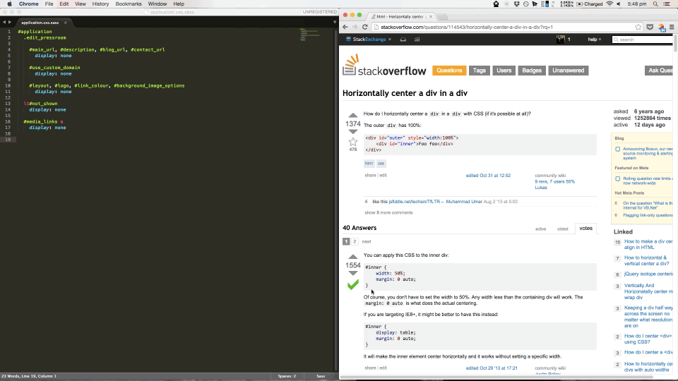

Sublime text plugin to convert HTML to HAML, CSS to SASS and JavaScript to CoffeeScript on paste.
Sublime text plugin to convert CSS, HTML or JavaScript in the clipboard to SASS, CoffeeScript or HAML on your screen.

"The best Sublime Text plugin I have ever used. Saved me 5 minutes already in the past 5 minutes." - @jrnbs
super+shift+p) and type install packageRailsMagicClipboard, and click on it to install the package.Insert CSS, Javascript or HTML (including from .html.erb files) from your clipboard into a .css.sass, .js.coffee or .html.haml file using "super+k+v". The copied data will be inserted into your file as SASS, CoffeeScript, and HAML respectively. Perfect for copying straight from Stack Overflow.
This plugin is intended to be very much something you install and forget about until your co-worker leans over your shoulder and is absolutely amazed. To that end, I recommend mapping "super+v" to the "rails_magic_clipboard" command in your user key bindings. This mapping is of course completely optional.
# Preferences/Key Bindings - User
[
{
"keys": ["super+v"], "command": "rails_magic_clipboard"
}
]From there, you can start pasting raw CSS into your .css.sass files and be amazed as pure sass goodness is pasted into your file, and all text pasted into other files will be pasted in as usual (so no worries there!) Same magical goodness applies to the other supported formats.
You must have the sass gem installed to use the CSS to SASS feature of this plugin. Internally, we use the sass-convert command, which requires the sass gem. To install the sass gem visit http://sass-lang.com/install.
To use the JS to Coffeescript automagical conversion you need to have the js2coffee Node Package Module installed (https://www.npmjs.org/package/js2coffee). If you don't have js2coffee installed, you can easily install it with the following command:
$ npm install -g js2coffeeIf you don't have npm installed then you can follow the instructions here http://blog.npmjs.org/post/85484771375/how-to-install-npm.
To use the HTML to HAML features of this plugin you need to have the HAML gem installed (gem install haml). If you're still having problems it might be because recently the HTML to HAML functionality has been stripped out into its own gem, unsurprisingly called html2haml. Installing the htmt2haml gem in the standard way (gem install html2haml) should fix the issue. If not, raise a github issue with me! Unfortunately at the moment erb flavoured HTML will not be parsed correctly.
If you are using RVM or rbenv etc, then you will need to set the path in settings, as RVM/rbenv modify the environment path, which messes with sublimes use of the path.
To find your path you can run echo $PATH on the command line. Copy the result then paste it into the RailsMagicClipboard user settings file, as shown below.
# Preferences/Package Settings/RailsMagicClipboard/Settings - User
{
"path": "your/copied/path/here"
}There is an issue with the paths and RVM/rbenv. Sublime Text will not load with the correct paths to find Sass if it is not loaded from the command line. At the moment I am not sure what to do about it, and am happy to hear ideas. The same issue is occuring here https://github.com/badsyntax/SassBeautify/issues/53. You can get around this by opening Sublime Text from the command line, or, if you're hardcore and want to solve the issue permanently, you can follow these instructions: http://unix.stackexchange.com/questions/89076/how-to-set-the-path-osx-applications-use/89077#89077.
If you find more, create an issue or let me know on twitter (@nmdowse). Most of the hard work was done by the creators and maintainers of SassBeautify, another great Sublime Text Plugin. So, thanks to them!